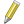
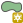

Začínáme¶
Na úvod si ukážeme přístup k datům uložených v databázi z prostředí desktopového programu QGIS.
Poznámka
Více o tomto programu se dozvíte na školení QGIS pro začátečníky.
Zobrazujeme data v QGIS¶
Vektorová data uložená v geodatabázi PostGIS je možné načíst buď z menu anebo z nástrojové lišty aplikace QGIS . Další možností je použít datový prohlížeč.
Objeví se dialog, ve kterém definujeme parametry nového připojení k databázi.
Nastavíme:
název spojení
hostitel (adresa serveru, pokud je to localhost, nemusíme vyplňovat)
databáze, ke které se chceme připojit
uživatelské jméno a heslo pro připojení k databázi
Poznámka
Při opětovném připojení je vhodné si uživatelské jméno a popřípadě i heslo uložit na lokální disk. V tomto případě nás QGIS upozorní, že ukládáme přihlašovací údaje do nešifrovaného souboru.
Nastavení připojení k databázi nejprve otestujeme a poté potvrdíme.
Poznámka pro pokročilé
Připojení k databázi z příkazové řádky
psql gismentors -U skoleni -W -h training.gismentors.eu
Následně se již můžeme k databázi připojit
a vybrat vektorové vrstvy, které chceme z geodatabáze načíst.
Datový prohlížeč¶
Připojení k databázi PostGIS je možné definovat i v rámci datového prohlížeče.

Po připojení k databázi vybranou vektorovou vrstvu jednoduše přetáhneme z datového prohlížeče do mapového okna.
Editujeme vektorová data¶
QGIS umožňuje editaci různých formátů vektorových dat včetně dat uložených v geodatabázi PostGIS. Přepnout danou vektorovou vrstvu do editačního módu je možné z kontextového menu
anebo nástrojové lišty QGISu .
Po přepnutí do editačního módu se vektorová vrstva zobrazí včetně lomových bodů (červené křížky) u vybraných objektů.
Editační nástrojová lišta QGISu umožňuje
přidávat nové prvky |
|
|
modifikovat uzly (přidávat, mazat a přesunovat) |
smazat vybrané prvky |
|
vyjmout vybrané prvky |
|
|
kopírovat vybrané prvky |
vložit prvky |


{kind=link}
{kind=link}
{kind=link}
{kind=link}
{kind=link}
{kind=link}
{kind=link}
{kind=link}
{kind=link}
{kind=link}
{kind=link}
Další nástroje jsou pak k dispozici v nástrojové liště Pokročilá editace.
Příklad přidání nového prvku¶
Z nástrojové lišty vybereme nástroj pro přidávání nového prvku .
{kind=link}
Lomové body nového prvku volíme stisknutím levého tlačítka myši. Poslední uložený lomový bod můžeme vrátit zpět pomocí klávesy Backspace.
{kind=link}
Editaci prvku ukončíme stisknutím pravého tlačítka myši. Poté se objeví dialog pro zadání atributů nově přidaného prvku.
Tip
Více k tématu editace ve školení QGIS pro začátečníky.